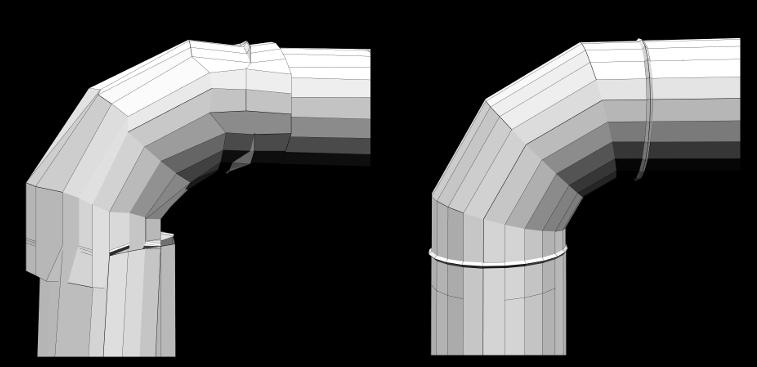
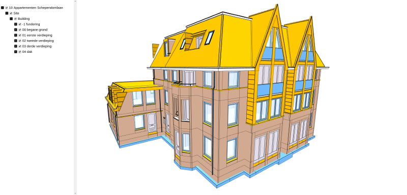

Blog / xeokit V1.1 Released
May 25, 2020
This week, xeolabs released xeokit SDK V1.1, with more features for browser-based BIM and engineering graphics.
In this release: a bundled BIM viewer, fast HTML tree views, context menus, ambient shadows, improved interaction, metadata support for 3DXML CAD models, support for BIMServer 1.5.2, plus various fixes and tweaks requested by users.

A Bundled BIM Viewer
xeokit V1.1 includes xeokit-bim-viewer, a source 2D/3D BIM viewer built on xeokit, that runs in the browser and can load models from your file system.
This viewer is developed with support from Digital building Industries AG and OpenProject GmbH.
The viewer is integrated within OpenProject BIM 10.4, and can also be used as a stand-alone JavaScript application. In combination with open source CLI model conversion tools, it represents a low-cost, high-performance way to get your IFC models on the Web, that allows you the freedom to convert and host your models on your own server or GitHub repository.
The viewer even has its own JavaScript programming API, through which you can programmatically load models, control UI state etc., to help integrate it into your website.
A Fast Tree View Plugin
xeokit V1.1 adds a TreeViewPlugin, a fast HTML tree view component that can navigate the objects in huge models. TreeViewPlugin has various hierarchy modes, scales up to large numbers of objects, and is fully customizable using CSS.
This plugin was developed with support from Digital building Industries AG and OpenProject GmbH.

A Customizable Context Menu
xeokit V1.1 adds a ContextMenu component that you can customize with your own options and CSS.
This component was developed with support from Digital building Industries AG and OpenProject GmbH.

Scalable Ambient Obscurrance (SAO)
xeokit V1.1 adds Scalable Ambient Obscurance (SAO), which approximates Ambient Occlusion in realtime. It darkens creases, cavities and surfaces that are close to each other, which tend to be occluded from ambient light and appear darker.
SAO was developed with support from D-Studio.
The animated GIF below shows the effect as we repeatedly enable and disable SAO. When SAO is enabled, we can see darkening in regions such as the corners, and the crevices between stairs. This increases the amount of detail we can see when ambient light is high, or when objects have uniform colors across their surfaces. Run the example to experiment with the various SAO configurations.

Improved Camera Controls
xeokit V1.1 includes several improvements to xeokit's CameraControl component.
One useful CameraControl improvement is camera speed that automatically scales to the distance to the object in front. This technique allows us to move quckly across open spaces and slowly across confined spaces.
- Run orbit demo - Duplex Model
- Run orbit demo - Holter Tower Model
- Run first person demo - Duplex Model
- Run first person demo - Holter Tower Model
- Run plan view demo - Schependomlaan Model
- Read API Docs

Load Metadata with 3DXML Models
The XML3DLoaderPlugin can now load structural metadata from 3DXML CAD models exported from SolidWorks. We can use that metadata with TreeViewPlugin to generate an HTML tree view to navigate the objects within the model.

XKT Precision Improvements
xeokit V1.1 includes a new version of its .XKT geometry format (V3), which fixes an accuracy issue with IFC models positioned far from the World-space origin. The XKTLoaderPlugin and the xeokit-gltf-to-xkt conversion tool have both been updated with this fix.

More Tips for Converting IFC Models for xeokit
The Creating Files for Offline BIM tutorial now includes more techniques for avoiding precision loss when converting IFC files for loading into xeokit.
Compatibility with BIMServer 1.5.2
The BIMServerLoaderPlugin now loads models from BIMServer 1.5.2, thanks to Nissim Pradhan, who is using xeokit within his research at Fraunhofer Italia.
What's Next?
Support for larger BIM models
xeolabs continues to research the best ways to view huge IFC models on the Web. Geographically large IFC models rely on double-precision coordinates, however graphics in Web browsers only supports single precision. At xeolabs, we are developing enhancements to xeokit's XKT geometry format, used by XML3DLoaderPlugin, that will allow us to load such models into xeokit, without loss of precision.
Improved measurements UX
Also, to improve the usability of xeokit's measurement tools, such as DistanceMeasurementsPlugin and AngleMeasurementsPlugin, future versions will introduce snap-to-vertex interaction, where the mouse or touch pointer will automatically snap to the nearest vertex.
Do you have a feature you'd like to see in xeokit? Hit the issue tracker: github.com/xeokit/xeokit-sdk/issues